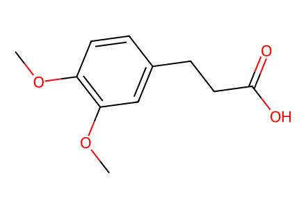
COc1ccc(CCC(=O)O)cc1OC21 个分子记录（19 个来源绘图、2 个具名反应物）、14 个制备事件、2 条目标路径。覆盖现有 SI；正文缺失。SMILES 表示来源共价母体，盐型冲突另存；目标 2 保留外消旋信息。全部使用 canonical isomeric SMILES，仍待独立专家复核。
完整 JSON · 逐步 CSV · 路线序列 · SDF · HRMS 核对
| 事件 | 分子连接 | 报告产率 | Canonical reaction SMILES |
|---|---|---|---|
| E01 | acid-B + NHS → B | B: 98.6% | COc1ccc(CCC(=O)O)cc1OC.O=C1CCC(=O)N1O>>COc1ccc(CCC(=O)ON2C(=O)CCC2=O)cc1OC |
| E02 | acid-C + NHS → C | C: 98% | COc1ccc(/C=C/C(=O)O)cc1OC.O=C1CCC(=O)N1O>>COc1ccc(/C=C/C(=O)ON2C(=O)CCC2=O)cc1OC |
| E03 | 3 + acrylonitrile → 4 | quantitative | C=CC#N.CC(C)(C)OC(=O)NCCCCN>>CC(C)(C)OC(=O)NCCCCNCCC#N |
| E04 | 4 + CbzCl → 5 | 5: 84.8% | CC(C)(C)OC(=O)NCCCCNCCC#N.O=C(Cl)OCc1ccccc1>>CC(C)(C)OC(=O)NCCCCN(CCC#N)C(=O)OCc1ccccc1 |
| E05 | 5 + B → 6 | 6: 68% | CC(C)(C)OC(=O)NCCCCN(CCC#N)C(=O)OCc1ccccc1.COc1ccc(CCC(=O)ON2C(=O)CCC2=O)cc1OC>>COc1ccc(CCC(=O)NCCCN(CCCCNC(=O)OC(C)(C)C)C(=O)OCc2ccccc2)cc1OC |
| E06 | 6 → 7 | quantitative | COc1ccc(CCC(=O)NCCCN(CCCCNC(=O)OC(C)(C)C)C(=O)OCc2ccccc2)cc1OC>>COc1ccc(CCC(=O)NCCCN(CCCCN)C(=O)OCc2ccccc2)cc1OC |
| E07 | 7 + C → 8 | 8: 88% | COc1ccc(/C=C/C(=O)ON2C(=O)CCC2=O)cc1OC.COc1ccc(CCC(=O)NCCCN(CCCCN)C(=O)OCc2ccccc2)cc1OC>>COc1ccc(/C=C/C(=O)NCCCCN(CCCNC(=O)CCc2ccc(OC)c(OC)c2)C(=O)OCc2ccccc2)cc1OC |
| E08 | 8 → 1 | 1: 71% | COc1ccc(/C=C/C(=O)NCCCCN(CCCNC(=O)CCc2ccc(OC)c(OC)c2)C(=O)OCc2ccccc2)cc1OC>>O=C(/C=C/c1ccc(O)c(O)c1)NCCCCNCCCNC(=O)CCc1ccc(O)c(O)c1 |
| E09 | 4 + methyl-2-bromopropionate → 9 | 9: 73% | CC(C)(C)OC(=O)NCCCCNCCC#N.COC(=O)C(C)Br>>COC(=O)C(C)N(CCC#N)CCCCNC(=O)OC(C)(C)C |
| E10 | 9 + B → 10 | 10: 50% | COC(=O)C(C)N(CCC#N)CCCCNC(=O)OC(C)(C)C.COc1ccc(CCC(=O)ON2C(=O)CCC2=O)cc1OC>>COC(=O)C(C)N(CCCCNC(=O)OC(C)(C)C)CCCNC(=O)CCc1ccc(OC)c(OC)c1 |
| E11 | 10 → 11 | not reported | COC(=O)C(C)N(CCCCNC(=O)OC(C)(C)C)CCCNC(=O)CCc1ccc(OC)c(OC)c1>>COC(=O)C(C)N(CCCCN)CCCNC(=O)CCc1ccc(OC)c(OC)c1 |
| E12 | 11 + C → 12 | 12: 78% | COC(=O)C(C)N(CCCCN)CCCNC(=O)CCc1ccc(OC)c(OC)c1.COc1ccc(/C=C/C(=O)ON2C(=O)CCC2=O)cc1OC>>COC(=O)C(C)N(CCCCNC(=O)/C=C/c1ccc(OC)c(OC)c1)CCCNC(=O)CCc1ccc(OC)c(OC)c1 |
| E13 | 12 → 13 | not reported | COC(=O)C(C)N(CCCCNC(=O)/C=C/c1ccc(OC)c(OC)c1)CCCNC(=O)CCc1ccc(OC)c(OC)c1>>COc1ccc(/C=C/C(=O)NCCCCN(CCCNC(=O)CCc2ccc(OC)c(OC)c2)C(C)C(=O)O)cc1OC |
| E14 | 13 → 2 | 2: 85% | COc1ccc(/C=C/C(=O)NCCCCN(CCCNC(=O)CCc2ccc(OC)c(OC)c2)C(C)C(=O)O)cc1OC>>CC(C(=O)O)N(CCCCNC(=O)/C=C/c1ccc(O)c(O)c1)CCCNC(=O)CCc1ccc(O)c(O)c1 |

COc1ccc(CCC(=O)O)cc1OCCOc1ccc(CCC(=O)ON2C(=O)CCC2=O)cc1OC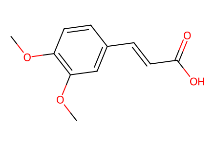
COc1ccc(/C=C/C(=O)O)cc1OC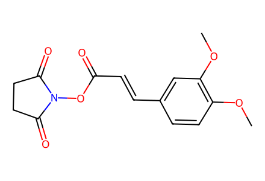
COc1ccc(/C=C/C(=O)ON2C(=O)CCC2=O)cc1OC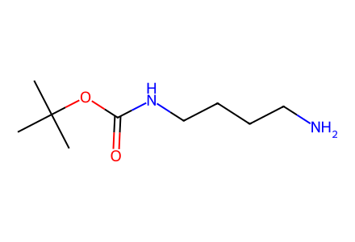
CC(C)(C)OC(=O)NCCCCN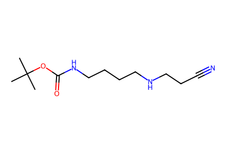
CC(C)(C)OC(=O)NCCCCNCCC#N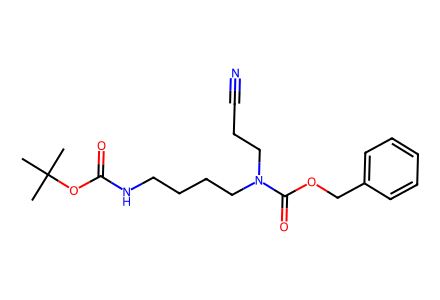
CC(C)(C)OC(=O)NCCCCN(CCC#N)C(=O)OCc1ccccc1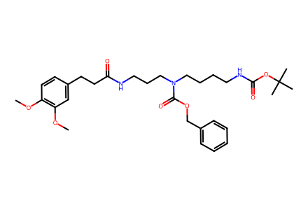
COc1ccc(CCC(=O)NCCCN(CCCCNC(=O)OC(C)(C)C)C(=O)OCc2ccccc2)cc1OC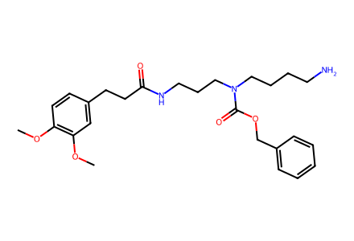
COc1ccc(CCC(=O)NCCCN(CCCCN)C(=O)OCc2ccccc2)cc1OC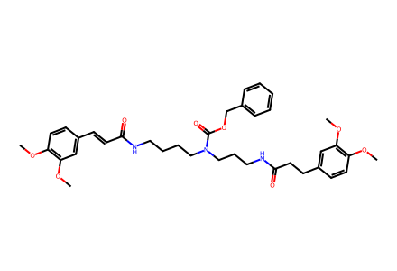
COc1ccc(/C=C/C(=O)NCCCCN(CCCNC(=O)CCc2ccc(OC)c(OC)c2)C(=O)OCc2ccccc2)cc1OC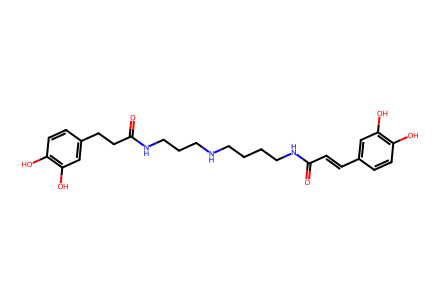
O=C(/C=C/c1ccc(O)c(O)c1)NCCCCNCCCNC(=O)CCc1ccc(O)c(O)c1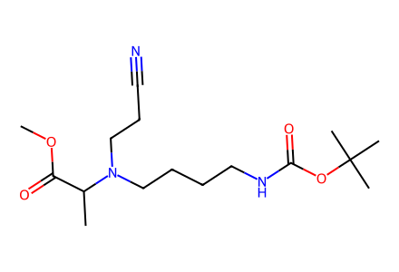
COC(=O)C(C)N(CCC#N)CCCCNC(=O)OC(C)(C)C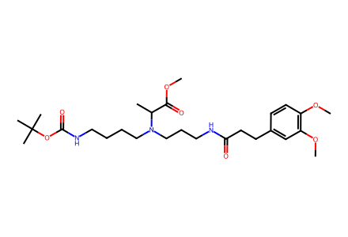
COC(=O)C(C)N(CCCCNC(=O)OC(C)(C)C)CCCNC(=O)CCc1ccc(OC)c(OC)c1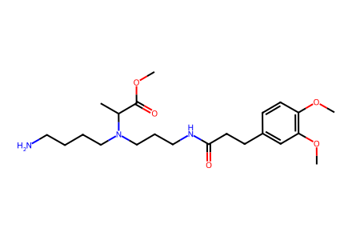
COC(=O)C(C)N(CCCCN)CCCNC(=O)CCc1ccc(OC)c(OC)c1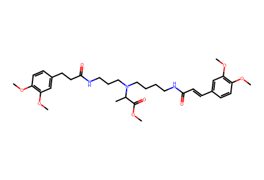
COC(=O)C(C)N(CCCCNC(=O)/C=C/c1ccc(OC)c(OC)c1)CCCNC(=O)CCc1ccc(OC)c(OC)c1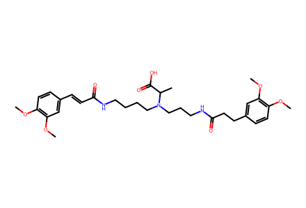
COc1ccc(/C=C/C(=O)NCCCCN(CCCNC(=O)CCc2ccc(OC)c(OC)c2)C(C)C(=O)O)cc1OC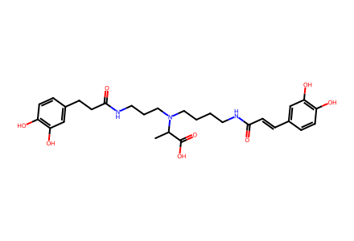
CC(C(=O)O)N(CCCCNC(=O)/C=C/c1ccc(O)c(O)c1)CCCNC(=O)CCc1ccc(O)c(O)c1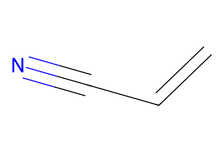
C=CC#N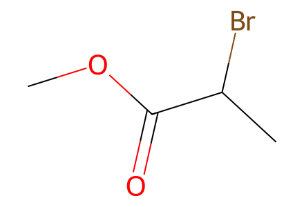
COC(=O)C(C)Br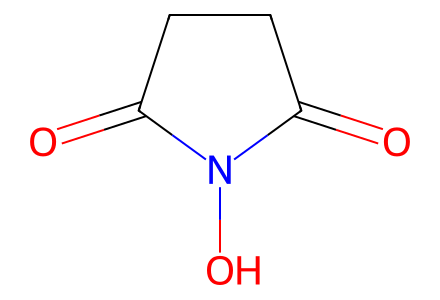
O=C1CCC(=O)N1O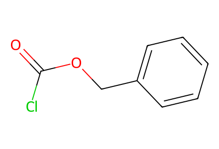
O=C(Cl)OCc1ccccc1